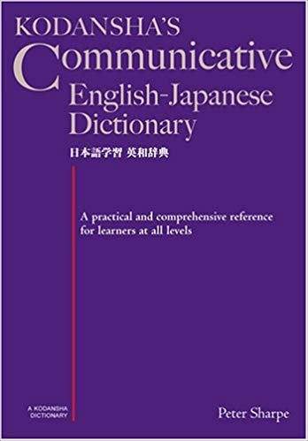
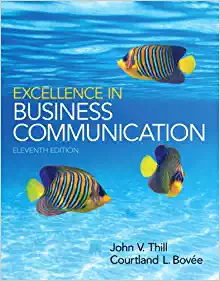
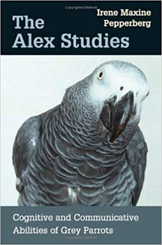

| Kodansha's Communicative English | ||
|---|---|---|
| Author: | Peter Sharpe |  |
| Publisher: | Kodansha International | |
| E-Book: | Download E-Book | |
| Excellence in Business Communication | ||
|---|---|---|
| Author: | John V. Thill |  |
| Publisher: | Pearson | |
| Edition: | 11th edition | |
| E-Book: | Download E-Book | |
| The Alex Studies: Cognitive and Communicative Abilities of Grey Parrots | ||
|---|---|---|
| Author: | Irene Maxine Pepperberg |  |
| Publisher: | Harvard University Press | |
| Edition: | 1st edition | |
| E-Book: | Download E-Book | |